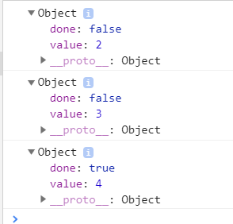
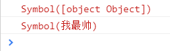
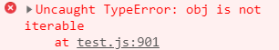

说起迭代器， 那就要先了解迭代模式
迭代模式： 提供一种方法可以顺序获得聚合对象中的各个元素， 是一种最简单，
也是最常见的设计模式，它可以让用户通过特定的接口寻访集合中的每一个元素
而不用了解底层的实现。
迭代器 ： 依照迭代模式的思想而实现，
分为内部迭代器和外部迭代器，
内部迭代器： 本身是函数， 该函数内部定义好迭代规则，完全接手整个迭代过程
外部只需要一次初始调用，如Array.prototype.forEach, Jquery.each
外部迭代器： 本身是函数， 执行返回迭代对象，迭代下一个元素必须显示调用，
调用复杂度增加，但灵活性增强。
我们主要来了解一下外部迭代器：
外部迭代器本身是一个函数， 执行这个函数就相当于启动了这个迭代器，
然后我们每次迭代需要手动调用next()方法，返回一个对象，
基于此我们来自己实现一个外部迭代器
const arr = [2,3,4];
function OuterIterator(o) {
let curIndex = 0;
let next = () => {
return {
value: o[curIndex],
done: o.length === ++curIndex,
}
};
return {
next
}
}
const oIt = OuterIterator(arr);
console.log(oIt.next());
console.log(oIt.next());
console.log(oIt.next());结果：

我们为什么要用外部迭代器呢 ？
想象一个场景， 后端给前端返回一个数组形式的数据， 前端通过for 循环遍历
当业务变动时， 后端传给前端的不再是数组了， 而是一个对象又
或者是一个Map/Set 结构的数据， 那前端的遍历代码就需要大规模重写。
所以我们要标准化迭代操作，
解决方案： ES6 引入Iterator, 部署在NodeLlist, argument, Array, Set, Map , 字符串
等数据上的Symbol.iterator属性 ， 使得这些数据是可迭代的， 并可进行
for...of , ... , Array.from等操作。
这里插播一个内容Symbol: js 第七种 基本数据结构
特点： 唯一， 可作为对象属性， 有静态方法Symbol.iterator
Symbol如果传入的是对象的话，会隐式调用对象的toString() 方法，比如：
let os = Symbol({'name': 'liu'});
console.log(os);
let os2 = Symbol({'name': 'liu', toString() {
return "我最帅"
}});
console.log(os2);我们重写了对象的toString方法， 结果：

回到主题， 原生有iterator接口的只有NodeLlist, argument, Array, Set, Map , 字符串等数据
对象上是没有iterator的， 所以它不能被迭代， 也不能进行for...of , ... , Array.from等操作
那我们要迭代对象怎么办呢 ？
没错， 就是给它加上我们自己按照ES6规范写外部迭代器：
const obj = { 0: 'liu',
1: '18',
2: 'man', }; console.log([...obj]);直接用...操作符报错， obj 不可迭代

const obj = {
0: 'liu',
1: '18',
2: 'man',
length: 4,
[Symbol.iterator] : function () {
let curIndex = 0;
let next = () => {
return {
value: this[curIndex],
done: this.length === ++curIndex,
}
};
return {
next
}
}
};
console.log([...obj]);结果：
obj必须是类数组， 就是属性是数字 ， 且有length属性 才能这样写。
我们下一篇来讨论generator生成器， 它可以生成一个迭代对象。